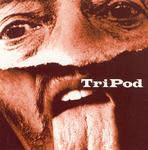

| Artist: | TriPod |
| Title: | TriPod |
| Label: | Moonjune Records MJR004 |
| Length(s): | 56 minutes |
| Year(s) of release: | 2003 |
| Month of review: | [12/2003] |
| 1) | Jerome's Spotlight | 2.51 |
| 2) | Trip The Light | 4.10 |
| 3) | Dance Of The Kabuki | 6.56 |
| 4) | Prelude | 0.56 |
| 5) | No Diamond Cries | 3.28 |
| 6) | East Flatbush | 0.49 |
| 7) | Buzz | 3.17 |
| 8) | Smoke & Mirrors | 4.50 |
| 9) | Conversation Drag | 3.59 |
| 10) | World Of Surprise | 2.24 |
| 11) | Ghosts | 2.08 |
| 12) | Fashion | 5.13 |
| 13) | Fuzz | 6.57 |
| 14) | As The Sun | 7.35 |
The two opening tracks immediately kick off with dominant honky sax and somewhat weird vocals. The bass throbs nicely and the percussion holds the correct challenge, not to the fore, but giving a fitting backing in complexity both as sound. Dance Of The Kabuki mingles strong sections with Mike Hammer bar type sax sounds, bringing on a nice but of variety. No Diamond Cries starts with a very full, more fluent sax sound. This track is more vocally oriented. Smoke & Mirrors starts very laid back, lazy even, with some slidy guitar and sleepy sax. As it progresses the sax at times gets a bit sharper, but the relaxed feeling remains. World Of Surprise has a bass line that reminds be a bit of White Room. The vocals are delivered more smoothly, less sharp. If it weren't for the screaming sax, the track might almost sound friendly, poppy even. Ghosts has the same feel as Smoke & Mirrors, leading into the saxy Fashion, but as the vocals set in the sax pipes down a bit. This track is a bit more biting and rocky. Fuzz is a jazz/rock freak track. Not that interesting in itself, but stomachable as they go.
Closing track As The Sun, however, is a strong progressively directed track, which would fit right in with Echolyn material, both in kind and quality, although it is a bit heavy on the sax.
The recycled material is played with just that bit of extra penache, giving it a more sparkling sound, bringing out the material more. By no means pointless rehashing, that.